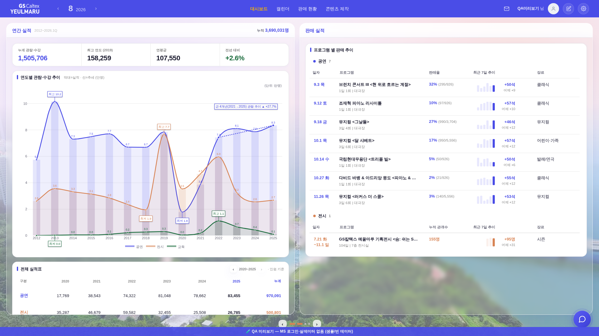
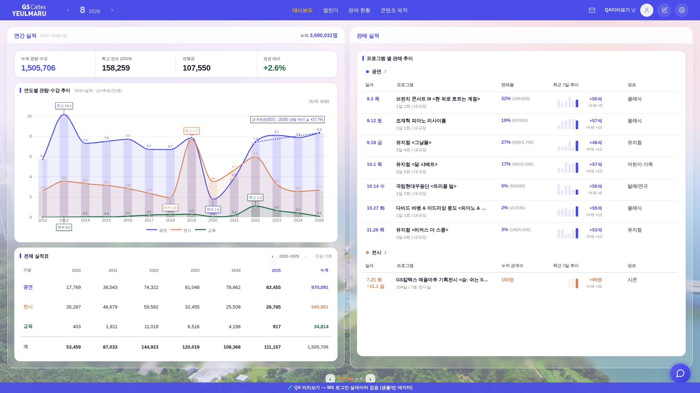
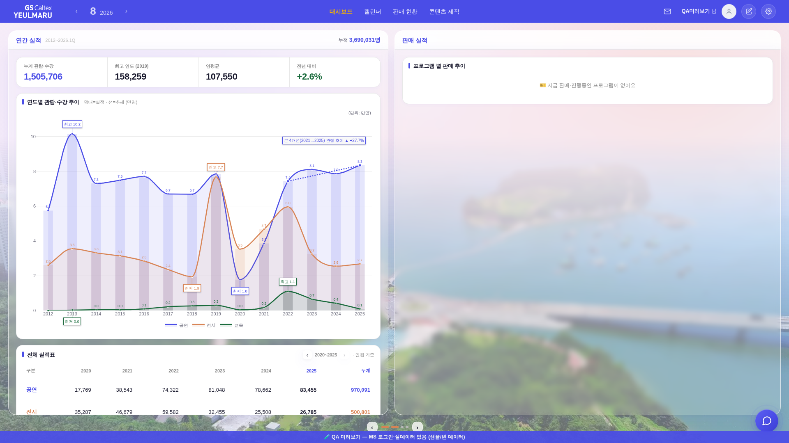
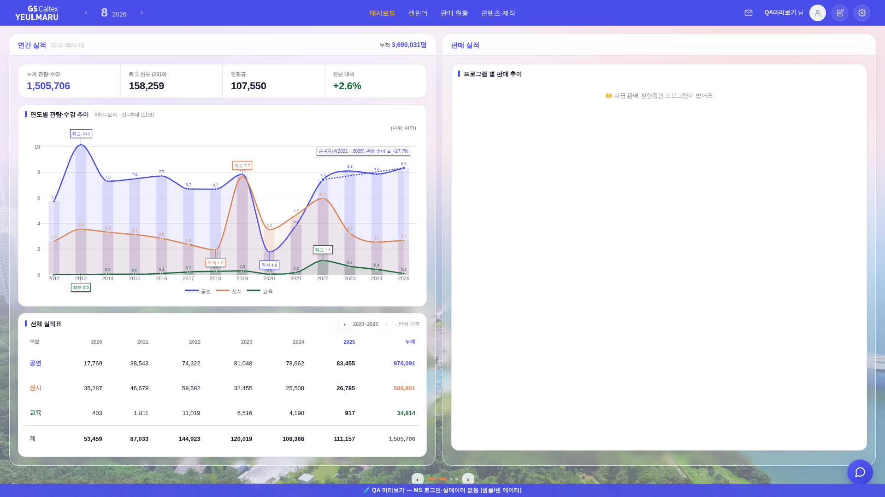
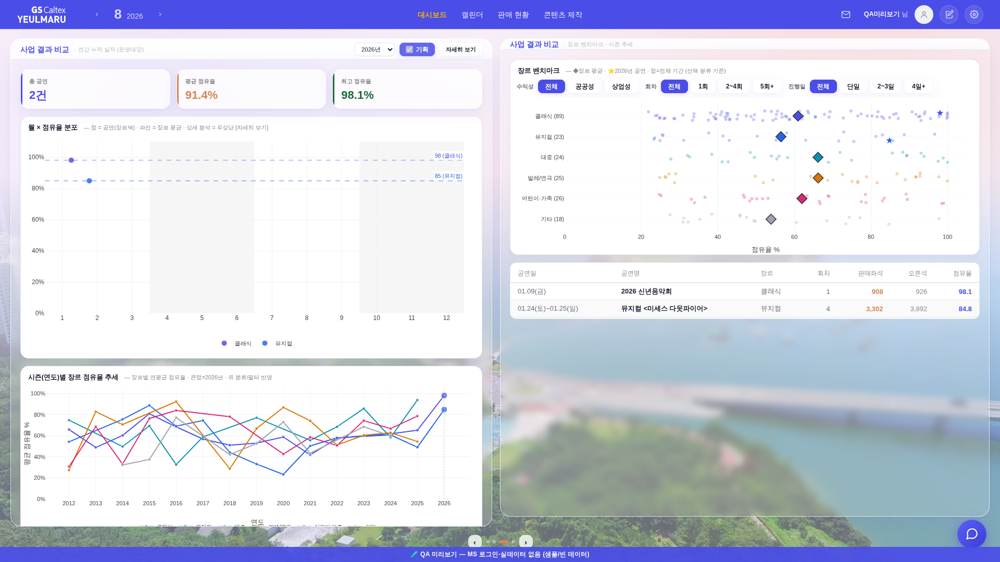
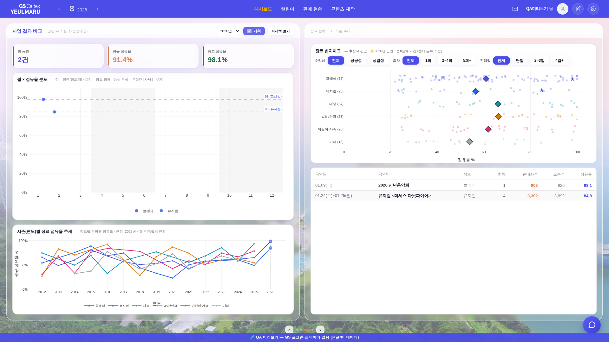

유리 블러 박스(이젤) 흰 라인 정렬 — 전후 260802 · 1920×1080 헤드리스 실측 · QA 목데이터
지시: ① 차트를 줄여 전체 실적표가 블러 칸에 딱(적절한 간격) ② 블러 칸 무접촉 ③ 판매 실적도 내용 없어도 딱 ④ 3-4면 「사업 결과 비교」 제목 좌측만 + 흰 칸 시작 수평선 통일 ⑤ 나올 것 다 나온 뒤 흰 라인 전부 정렬 ⑥ 블러 칸 틀어짐 제거 · 번쩍임 등 버그 금지 — 각 버튼을 눌러 전/후를 같은 자리에서 비교.
원인 3가지(코드 실측)
① 차트 압축이 문서 기준 — 이젤 고정(#545) 후 문서는 안 넘치므로 차트가 560 그대로 → 전체 실적표가 박스 하단에 잘려 내부 스크롤로 숨음(넘침 실측 161px).
② 우 목록 스트레치가 순환 계산 — 「박스 하단 − 카드 하단」을 tail로 읽는데 박스 하단이 화면 고정이라 빈 유리까지 tail로 잡혀 no-op → 흰 카드가 박스 중턱에서 끝남(빈 유리 187px).
③ 넘김(_bizmSwap)이 헤더 정본 min-height:47px를 삭제 — 첫 넘김부터 헤더가 내용 높이(좌 41·우 22)로 붕괴 → 박스 상단이 열마다 밀려 하단선 Δ19px 틀어짐. 수정: 하단선(뷰포트−점줄−24) 한 줄을 먼저 확정하고 각 박스 높이 = 하단선 − 자기 상단(이젤 계약 그대로·크기 불변) · 차트 압축 기준을 박스 내부로 · 목록 스트레치를 「현재값+부족분」 비순환식으로 · 헤더 min-height 삭제 중단 · 3-4면 우 제목 생략(좌측만) · 마지막 흰 도형 fill(data-bizmfill).
① 1-2면 · 연간 실적 + 판매 실적(데이터 있음)
좌: 차트 560 고정 → 전체 실적표가 박스 밖(1154)까지 · 우: 흰 카드가 825에서 끝나 빈 유리 187px


전
후: 차트 560→399 자동 압축 → 전체 실적표가 교육·계 행까지 전부 보이고 하단이 박스 안선(1012−패딩18−보더1=993)에서 끝남. 우 목록도 979(카드 하단 마진 14 = 260731 정본 몫)까지 스트레치.
② 1-2면 · 판매 실적 비어 있음(QA 빈 데이터)
「내용이 없어도 딱 맞아떨어지게」 — 빈 안내문뿐이어도 흰 카드가 같은 라인까지


전
전: 카드가 254에서 끝나 빈 유리 758px → 후: 979까지 채움(내용 유무 무관 동일 라인).
③ 3-4면 · 사업 결과 비교(짝 면)
중복 제목 · 헤더 붕괴(41/22) → 박스 틀어짐 Δ19px · 좌 카드 잘림 · 우 하단 빈 유리


전
후: 우측 헤더는 「장르 벤치마크 · 시즌 추세」만(제목은 좌측 한 곳) · 헤더 47px 통일로 흰 유리 시작선 동일 · 시즌 추세 차트 300→248 흡수로 좌 카드 하단 993.1 · 1월 공연 표(2행)는 fill로 993까지 = 좌·우 흰 라인 Δ0.1px.
실측표 (1920×1080 · 디자인px)
항목
전
후
1-2면 좌 박스 내용 넘침(scroll−client)
+161px(표 잘림·내부 스크롤)
0px(차트 560→399)
1-2면 좌 전체 실적표 하단 ↔ 박스 안선(993)
1154(+161)
993(Δ0)
1-2면 우 판매 실적 카드 하단(데이터/빈)
825 / 254
979 / 979(마진 14 = 정본 몫)
3-4면 헤더 높이(좌/우)
41 / 22(붕괴)
47 / 47(정본 min-height)
3-4면 박스 상단·하단 Δ(좌−우)
19 / 19(틀어짐)
0 / 0
3-4면 마지막 흰 카드 하단(좌/우)
1039(박스 밖·잘림) / 613(빈 유리 380px)
993.1 / 993(Δ0.1)
넘김 왕복 후(1→3-4→1) 박스·차트
우 카드 스트레치 소실
121→1012·399 동일(표류 0)
프레임 노드 유지(번쩍임 계약 #543)
유지
유지(노드 동일성 실측 true)
재계산 20회 반복 흔들림
—
상태 1개(무흔들림)
JS 에러(고속 왕복 Plotly 레이스 제외 = 기존 3건 동일)
0
0
경계 기록: 화면이 아주 짧으면(예 1920×740) 압축(biz-fit) 후에도 최소 차트(180)로 못 담는 잔여는 박스 내부 스크롤(정본 260802d 「길면 박스 안 스크롤」) · 좁은 화면(≤1200)은 이젤·fill 전부 해제(자연 높이 회귀 0).